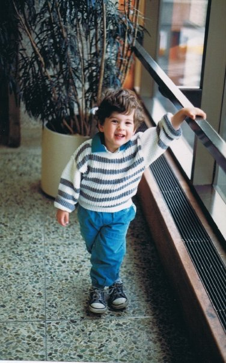

Hello, I'm Tristan
Front End Web Developer

An Introduction About Me
I am a front end developer who enjoys the challenge of translating the ideas and design of a project to a working and accessible site. Prior to entering the tech field I worked in the hospitality industry for 12 years.
Now, I am a recent graduate of Juno College's Web Development Bootcamp. My time at Juno gave me the opportunity to hone skills in HTML5, CSS3, Javascript, React and Firebase. I was able to practice these skills with several projects which were both individual and team work based.